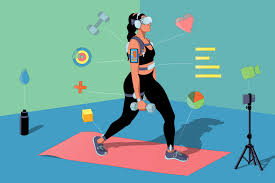

What is Self-Improvement?
Let’s define self-improvement. The definition of self-improvement is pretty self-explanatory: is the improvement of one’s knowledge, status, or character by one’s own efforts.
It’s the quest to make ourselves better in any and every facet of life

Best Self-Improvement Articles to Start With
Self-improvement almost always starts with self-awareness and the ability to transform your habits. If you're serious about transforming your life and improving yourself, you should start with these two articles:
- How to Stop Lying to Ourselves: A Call for Self-Awareness: If you're serious about getting better at something, then one of the first steps is to know—in black-and-white terms—where you stand. You need self-awareness before you can achieve self-improvement.
- Forget About Setting Goals. Focus on This Instead: For most of us, the path to self-improvement starts by setting a specific and actionable goal. What I'm starting to realize, however, is that when it comes to actually getting things done and making progress in the areas that are important to you, there is a much better way to do things. It all comes down
to the difference between goals and systems.
Self-improvement is essential for several reasons:
- Personal Growth: It allows individuals to evolve and adapt to life's challenges, fostering resilience and confidence.
- Enhanced Relationships: By improving oneself, individuals can cultivate better communication and empathy, leading to healthier relationships.
- Increased Productivity: Self-improvement often involves developing better habits and time management skills, which can enhance overall productivity in both personal and professional contexts.
Key Components of Self-Improvement
- Self-Awareness: Understanding your thoughts, emotions, and behaviors is crucial. It helps in recognizing patterns that may hinder progress and provides insights into areas needing improvement.
- Goal Setting: While traditional goal-setting can be effective, focusing on systems and processes rather than just outcomes can lead to more sustainable growth. This approach emphasizes the importance of daily habits and routines that contribute to long-term success .
- Continuous Learning: Engaging in lifelong learning through reading, courses, or workshops can significantly enhance knowledge and skills. This commitment to learning opens up new perspectives and opportunities for growth .
- Mindfulness and Reflection: Practices such as journaling and meditation can facilitate deeper self-reflection, helping individuals to process their experiences and emotions effectively.
- Support Systems: Surrounding oneself with positive influences and seeking mentorship can provide encouragement and accountability, making the self-improvement journey more manageable and enjoyable.
Common Self-Improvement Topics
- Productivity and Time Management: Strategies to maximize efficiency and manage time effectively.
- Emotional Intelligence: Understanding and managing emotions to improve interpersonal relationships.
- Health and Wellness: Developing habits that promote physical and mental well-being.
-
Financial Literacy: Learning to manage finances effectively to achieve financial independence.